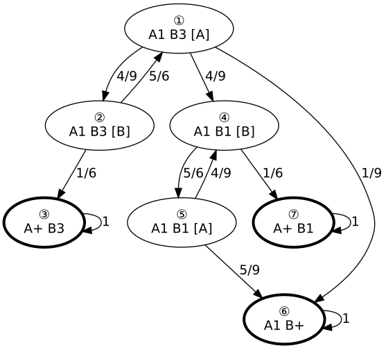

Markov analysis
Contents
Markov analysis#
import numpy as np
from numpy.linalg import matrix_power
np.set_printoptions(precision=3, suppress=True)
The following diagram shows all possible states of the Eclipse space battle with their corresponding transition probabilities. 
From this graph we can extract the following transition probability matrix. Each line represents the transition probabilities for one of the states. The first line for example contains the probabilities for state ①.
probabilities=np.array([[0, 4/9, 0, 4/9, 0, 1/9, 0], [5/6, 0, 1/6, 0, 0, 0, 0], [0, 0, 1, 0, 0, 0, 0], [0, 0, 0, 0, 5/6, 0, 1/6], [0, 0, 0, 4/9, 0, 5/9, 0], [0, 0, 0, 0, 0, 1, 0], [0, 0, 0, 0, 0, 0, 1]])
print(probabilities)
[[0. 0.444 0. 0.444 0. 0.111 0. ]
[0.833 0. 0.167 0. 0. 0. 0. ]
[0. 0. 1. 0. 0. 0. 0. ]
[0. 0. 0. 0. 0.833 0. 0.167]
[0. 0. 0. 0.444 0. 0.556 0. ]
[0. 0. 0. 0. 0. 1. 0. ]
[0. 0. 0. 0. 0. 0. 1. ]]
Now let’s play around a little with these probabilities. The initial state of the game means, that the probability of being in state ① is 100% or 1.0. So we define the initial_state like this and then see, what the probabilities are after two turns.
initial_state = np.array([1, 0, 0, 0, 0, 0, 0])
p2=np.dot(probabilities, probabilities)
print(p2)
[[0.37 0. 0.074 0. 0.37 0.111 0.074]
[0. 0.37 0.167 0.37 0. 0.093 0. ]
[0. 0. 1. 0. 0. 0. 0. ]
[0. 0. 0. 0.37 0. 0.463 0.167]
[0. 0. 0. 0. 0.37 0.556 0.074]
[0. 0. 0. 0. 0. 1. 0. ]
[0. 0. 0. 0. 0. 0. 1. ]]
np.dot(initial_state, p2)
array([0.37 , 0. , 0.074, 0. , 0.37 , 0.111, 0.074])
Steady State?#
So do these values eventually reach a stable state - is there a so called steady state to this process? The easiest approach is to check if we are dealing with a regular Markov chain. But since already in the 0th iteration we have entries with a 0 in the transition matrix, we know, that is not the case.
But with a sufficient amount of Markov steps we should reach a steady state. Let’s try 1000 steps.
print(np.dot(initial_state, matrix_power(probabilities, 1000)))
[0. 0. 0.118 0. 0. 0.696 0.187]
How about after 2000 steps?
print(np.dot(initial_state, matrix_power(probabilities, 2000)))
[0. 0. 0.118 0. 0. 0.696 0.187]
The difference between the power of 1000 and 2000 aren’t visible with 3 digits.
So let’s see, if this could be more efficient and let’s determine an minimal amount of iterations needed.
prev = probabilities
next = np.dot(initial_state, probabilities)
power = 0
while not np.allclose(prev, next):
power += 1
prev = next
next = np.dot(prev, probabilities)
print(f"Steady state after {power} iterations")
print(f"Probabilities of states in steady state: \n{prev}")
Steady state after 43 iterations
Probabilities of states in steady state:
[0. 0. 0.118 0. 0. 0.696 0.187]
According to “Markov Chain math”, it should also be possible to calculate the steady state by solving the equation \(E\vec{t}=\vec{t}\), where \(E\) is our transition probability matrix and \(\vec{t}\) will be the steady state vector. NumPy provides us with a way to solve equations of the form \(A\vec{x}=\vec{b}\). But with a simple transformation we can get there as well. We can simply solve for \((E-I)\vec{t}=0\) with \(I\) being the identity matrix.